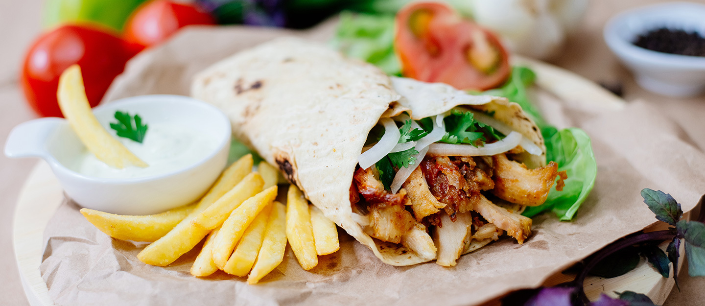

Chicken Shawarma

Description
Shawarma is favourite street food of every person who live in middle east;including mine.Shawarma refers to a meat-cooking technique in which meat is stacked together on a vertical spit and cooked by slowly rotating that spit in front of a fire.However,today we will make it in an oven. So, let's learn how to make this delicious dish.
Ingredients
- 1kg of Chicken thighs
- 1 teaspoon of Cinnamon powder
- 2 teaspoons of Cayenne pepper
- 1 teaspoon of Cumin
- 2 teaspoons of Black pepper
- 1 teaspoon of Garlic powder
- 1 teaspoon of Turmeric
- 1 teaspoon of Cardamon
- 1 Tablespoon of Paprika
- 1 Tablespoon of Sumac
- 1 Tablespoon of Salt
- 4 Tablespoons of Olive oil
- 1 Tablespoon of Lemon juice
- 3 cloves of Sliced Garlic
Steps
- In a bowl, add Cinnamon, Cayenne Pepper, Cumin, Black pepper, Garlic powder, Turmeric, Cardamom, Paprika, Sumac and Salt.
- Mix it all together, then add Olive oil,Lemon juice and Sliced Garlic
- Mix to form the marinade
- Add bonless, skinless chicken thighs and mix to coat the chicken.
- Cover bowl in clingfilm / plastic wrap
- Marinate 1-2 Hours
- Cut the chicken into thin strips, then thread one end of each strip on to a metal skewer.
- Heat the grill to medium and find a tray over which you can balance the skewers so they're suspended rather than touching the base.
- Grill for five minutes, then turn over and grill for another five minutes-the chicken should be charred and cooked through
- Rest the chicken in its own juices to cool down a little and prepare the accompaniments
- Then serve immediately.
Optional
- Tahini
- Toum(garlic sauce)
- French fries
- cucumber
- lettuce
- tomato
- Chopped parsley
- Khubz(Arabic bread)